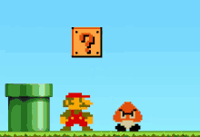

Uwagi na temat JS
-kiedy powstała? - Język JavaScript został opracowany w 1995 roku.
-dlaczego jest to język skryptowy? - Skryptowy oraz wieloparadygmatowy język programowania.
-gdzie jest wykonywany JS (klient lub serwer)? - Kod JavaScript może być umieszczony w osobnych plikach, do których odwołują się pliki HTML.
-dlaczego jest to bezpieczne narzędzie? - Gdy projekty w nim budowane są traktowane z odpowiednią dbałością i zastosowaniem najlepszych praktyk.
-czy jest to język obiektowy, jeśli tak to dlaczego? - JavaScript to obiektowy język skryptowy. Aplikacje w języku Java działają w maszynie wirtualnej lub w przeglądarce, a kod JavaScript jest uruchamiany wyłącznie w przeglądarkach.
